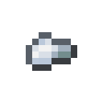

试验台与制造机
每台机器都在制造机中制造。简单的机器只需材料。其余的则需要一块空白光掩模，上面载有它所计算内容的设计，而设计要在试验台上用最小的运算连接而成。
 合成
合成


 合成
合成


 无序合成
无序合成

 无序合成
无序合成

规格
试验台列出了各项规格：一个模块必须计算什么、一个公式，以及一组答案精确算好的测试用例。有些用例很普通。另一些则是会让直观设计出错的输入：上千的分数、一行相等的数、远离零的数。设计在每个用例上都精确到千分之一以内，就算通过。
规格层层相依。注意力需要你的 softmax 和矩阵乘法；Transformer 块需要层归一化、注意力和前馈块。一项规格所依赖的规格都验证之后，它才会开放。
连接设计
从左侧把部件拖到板上，再从一个节点的右边缘拖到另一个节点的左边缘，就能把它们连起来。每个节点都显示一条数字条带，是它在所选用例上算出的数；点击即可读出。条带变红表示出现了不是数字的值，应该查看的就是让它变红的那个节点。把最后一个节点接到结果，右侧的用例会告诉你哪些通过，其余的为何没通过。
部件：
- 来源：你输入的常数，以及 size，即最后一轴的长度。
- 算术：add、sub、mul、div 和 max，逐元素计算。大小为 1 的轴会拉伸以匹配另一个输入，所以一行的和可以除整行的数。
- 函数：neg、exp、log、sqrt、tanh 和 round。
- 末轴：sum 和 amax 把这一轴保留为大小 1；transpose 交换最后两轴；unsqueeze 和 squeeze 添加和去掉大小为 1 的轴；causal 遮住对角线以上的一切。
- 网格、旋转：cos 和 sin；round，取最接近的整数，正好一半时取偶数一侧；exponent，浮点数存储的 2 的幂次，pow2 把它还原；index，每一行的位置；pair，一行中每个数属于第几对；turn，把每一对转四分之一圈；left 和 right，末轴的两半。
- 你的模块：你验证过的每项规格，作为一个部件。
记录
所有用例都通过后，「录到光掩模」会把设计写到你物品栏中的一块空白光掩模上，并署上你的名字。从此这项规格对你而言算作已验证，它的模块也会出现在每个试验台的部件中。
制造
把光掩模放进制造机，选一台机器。每台机器需要一个张量机壳、若干晶圆，会学习权重的还需要权重晶体。设计的面积决定晶圆数：每四单位面积一块晶圆。每个基本运算占一点面积，每个模块占其规格的设计所需的面积，所以设计越小，机器越便宜。光掩模永远不会消耗。
不放光掩模时，制造机制造无需设计的机器：嵌入表和位置表、残差汇合点、门控、缩放器、因果掩码、分头器与合头器、延迟线以及拼接器。矩阵乘法光掩模还能制造训练加速器和驱动器坞，线性层光掩模还能制造高密度驱动器和便携驱动器，注意力光掩模还能制造沙漏和接入点和大多数升级，Transformer 光掩模还能制造预报机 II、预报机 III、竞技场、冶炼炉和堆叠驱动器，以及能量升级和升力升级。计划、bf16、fp8、fp4、正交化和文档掩码的光掩模制造配方的各个单元。带缓存的注意力光掩模制造KV 缓存，权重取整光掩模制造权重打包器。
融合与未融合
遗迹中也藏着旧的光掩模，载有打捞来的设计：正确无误，却是一个基本运算一个基本运算地写出来的。用它们制造的机器是未融合的。它们给出同样的答案，却会把中间的每个张量都写出来，因此更占内存，训练也更慢。你自己验证的设计会制造出融合的机器，每台一个内核。机器的界面和提示框会说明它属于哪一种。
玻璃板红石中继器张量机壳工作台铁锭试验台灯笼玻璃活塞熔炉制造机沙子红石粉晶圆铁粒空白光掩模